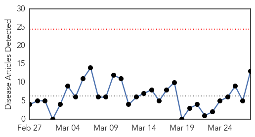
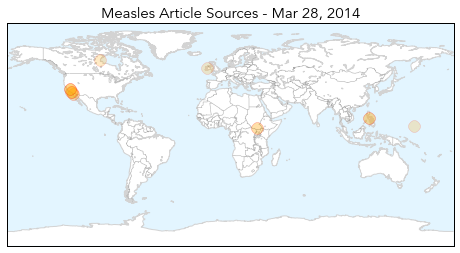
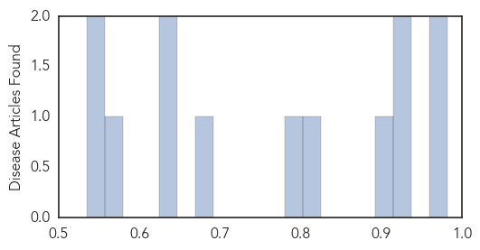
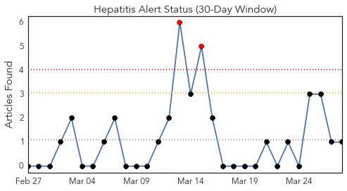
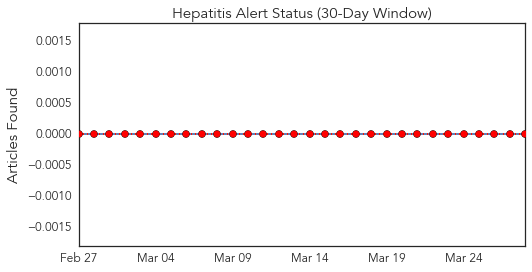
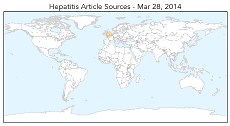

Measles
30-Day Web Trend
0 alerts, 0 warnings

30-Day Twitter Trend
0 alerts, 0 warnings
Article Locations
Article Confidences
Top Articles:
- 0.981
- Number of Measles Cases Reaches 49 in California
- 0.961
- Orange County confirms 21 cases of measles
- 0.930
- CORONA DEL MAR TODAY County, District Officials Urge Vaccines As Measles Cases Climb
- 0.928
- Central Valley Business Times
- 0.898
- Warning over measles outbreak at NUIG
- 0.817
- California Experiences Worst Measles Outbreak In Two Decades
- 0.796
- KUAM.com-KUAM News: On Air. Online. On Demand.
- 0.686
- Urgent Supplies Reach Remote Areas In South Sudan, With Joint Operation by UNICEF and WHO
- 0.634
- HSE issues warning after two cases of measles confirmed at NUI Galway
- 0.628
- Measles cases confirmed in NUI Galway
- 0.574
- Relief Supplies Reach Remote Akobo In South Sudan, With Joint Operation By UNICEF and WFP
- 0.553
- Relief Supplies Reach Remote Akobo In South Sudan, With Joint Operation By UNICEF and WFP - South Sudan
- 0.535
- Pacific Daily News
Top Tweets:
-
No tweets found for Mar 28, 2014
Hepatitis
30-Day Web Trend
2 alerts, 0 warnings

30-Day Twitter Trend
0 alerts, 0 warnings

Article Locations
Article Confidences

Top Articles:
Top Tweets:
-
No tweets found for Mar 28, 2014